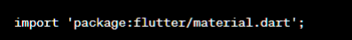
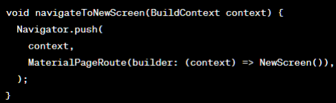
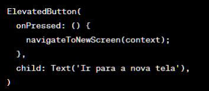
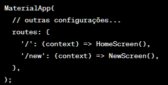
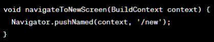
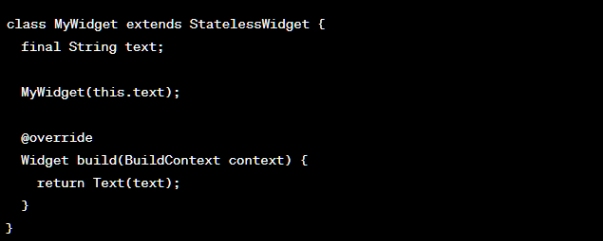
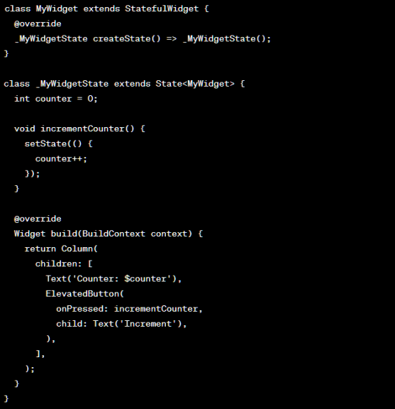
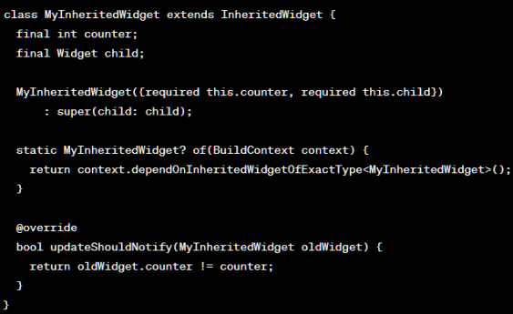

No Flutter, existem vários métodos para navegar entre telas em um aplicativo.
Há
dois dos métodos mais comuns: uso do widget Navigator e uso de rotas nomeadas.
● Importe o pacote do Flutter:
● Crie uma função para lidar com a navegação:
● Chame a função de navegação em resposta a um evento, como um botão pressionado:
No exemplo acima, NewScreen() representa a tela para a qual você deseja navegar. Ao chamar Navigator.push, você está adicionando uma nova rota à pilha e a tela será empurrada para a frente.
O uso de rotas nomeadas fornece uma maneira mais estruturada de navegar entre telas, permitindo que você defina um nome para cada rota e navegue para ela usando esse nome. Isso torna o código mais organizado e facilita a manutenção.
● Declare as rotas nomeadas no método MaterialApp ou CupertinoApp:
● Navegue para uma nova tela usando o nome da rota:
É importante observar que, se você deseja passar dados para a nova tela ou retornar dados da nova tela para a tela anterior, o Flutter fornece mecanismos adicionais, como argumentos de rota e retornos de tela. Esses recursos podem ser usados em conjunto com os métodos de navegação mencionados acima.
No desenvolvimento de aplicativos Flutter, o gerenciamento de estado é uma parte fundamental para manter a consistência e a sincronização dos dados entre os diferentes componentes da interface do usuário. Existem várias abordagens para o gerenciamento de estado em Flutter, incluindo o uso de bibliotecas externas, como o Provider, MobX, Redux, entre outras. Além disso, o próprio Flutter possui um mecanismo interno chamado "gerenciamento de estado local" que permite controlar o estado em um único widget.
Stateful Widgets: Use widgets stateful para controlar o estado dentro de um único widget. É adequado para aplicativos menores ou com requisitos de estado simples.
Provider: Uma biblioteca popular que permite compartilhar estado eficientemente entre widgets, seguindo o conceito de Injeção de Dependência. É útil para atualizar dados de forma reativa.
MobX: Uma biblioteca poderosa que usa observáveis e reações para rastrear dependências entre os dados e atualizar automaticamente a interface do usuário. É útil para gerenciar estados complexos ou reativos.
Redux: Uma arquitetura de gerenciamento de estado que usa um store centralizado para armazenar todo o estado do aplicativo e implementar um fluxo unidirecional para atualizar e recuperar dados, adequado para aplicativos com grande quantidade de estado compartilhado.
Essas são algumas das opções disponíveis, e a escolha depende do tamanho,
complexidade e necessidades do seu aplicativo.
É recomendável experimentar diferentes
abordagens para encontrar a que melhor se adapte ao seu projeto.
No Flutter, os widgets são a principal forma de gerenciar o estado dentro da hierarquia da interface do usuário. Existem alguns tipos de widgets que você pode usar para lidar com o gerenciamento de estado em seu aplicativo abaixo.
Stateless Widget: Um widget "stateless" é imutável, o que significa que ele não possui estado interno mutável. Ele é construído apenas com base nos parâmetros fornecidos. Ao atualizar o estado, um novo widget stateless é construído para refletir as alterações. É adequado para componentes estáticos que não precisam atualizar seu estado.
Exemplo:
Stateful Widget: Um widget "stateful" tem um estado interno mutável que pode ser atualizado ao longo do tempo. Ele mantém o estado em uma classe separada chamada 'State', que é vinculada ao widget e gerencia as atualizações de estado. Ao chamar 'setState()', o Flutter reconstruirá o widget com base nas alterações do estado interno.
Exemplo:
InheritedWidget: Um InheritedWidget é um widget especial do Flutter que permite compartilhar dados entre widgets descendentes de forma eficiente. Ele define um valor que pode ser acessado por qualquer widget descendente. Quando o valor é atualizado, os widgets descendentes que dependem dele são reconstruídos automaticamente.
Exemplo:
Ao gerenciar o estado em um aplicativo Flutter, é importante considerar algumas técnicas para evitar problemas de desempenho. Aqui estão algumas dicas para otimizar o gerenciamento de estado e melhorar o desempenho:
Essas técnicas ajudarão a melhorar o desempenho do seu aplicativo Flutter, garantindo uma utilização eficiente do estado e evitando operações desnecessárias que possam impactar a experiência do usuário.